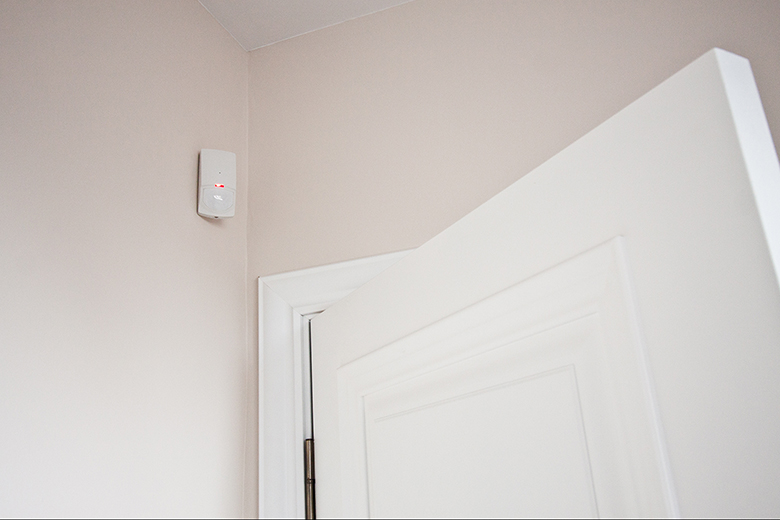

Sensors

Do you know why those sensors that sometimes exist in a house are good? Well… not only to protect from burglars. Who has time anyway to arm the house every time they leave?
Those sensors that blink or make a tiny sound every time somebody moves in the house are good for some nights when you can’t sleep and you find yourself thinking about idiotic stuff, wishing more idiotic stuff and imagining even more idiotic stuff. And then you see it. That fucking sensor blinks or makes its normal soft sound, even though you are still in bed thinking and, obviously, not moving.
And you know it’s not broken. It doesn’t have to be fixed. The sensor acknowledges that there is something else or somebody else in the room with you. You just can’t see it, but that doesn’t mean that it isn’t there.
So what do you do?
Well of course you go and open the lights. All the lights. And a torch, if you have any. And you look everywhere, you search each and every fucking corner of the room. You can’t find anything, so you go back to bed thinking that the sensor must be malfunctioning. I have to call an electrician in the morning, you say to yourself.
If you are lucky and is not a weekend or a bank holiday, somebody does come the next day and checks all the sensors from your house. And he eventually says there is nothing wrong with them. Then you tell him that he must check again. Surely, he is wrong. Or maybe he missed something.
Otherwise it means you are crazy. Or that the sensors really picked up movement last night and that can’t be right.
So the guy checks again and tells you for the second time that the sensors are fine, man. And then he leaves. He goes on to check other sensors or other electrical stuff. And you just stand there, closing the door, saying bye and thinking that you must be crazy.
A couple of minutes later your mind decides that it was a dream. A stupid dream and you fell for it like an idiot.
You go on with your day, like a normal person, doing normal things like going to work, eat, laugh with your friends, maybe drink some beer. And then it is time for you to go to bed. You turn off the lights and you close your eyes.
If you are lucky, your sensor only blinks and doesn’t make sound, so you don’t see anything and that means you have no idea what happened. But is that really luck?
If you are unlucky, your sensor makes a soft sound. And when you hear it, you open your eyes and for a couple of seconds you just stay there scared like shit, trying to come up with some logical explanation that doesn’t really exist.
And the thing is nothing happens. You don’t get eaten by a weird looking creature. You don’t even see anything. You just know that there is something in there with you and you can’t go to sleep knowing that.
You want to know what it is and the fact that you might never find out creeps you even more.
But what else is there for you to do except to try and get some fucking sleep?

Comments